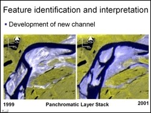
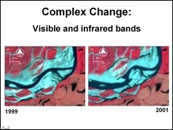

 This study was the extension of the study carried out by Sean O'Guinn in Fall 2002. It focused on using the Landsat ETM 15 meter spatial resolution panchromatic data. Two images from mid summer of 1999 and 2001 were analyzed to monitor changes in geomorphic features of the Colville River. Image stacking and differencing allowed areas of erosion and deposition of sediment to be identified and measured.
 Geomorphic features such as mid bar migration, point bar deposition, cut bank erosion, new channel development, and sand flat development were detected based on image analysis alone. The adjacent figure shows mid bar that has experience erosion on its upstream side and a large amount of sediment deposition on is downstream side. This sand bar appears to be growing as it migrates downstream. The area of deposition was computed to be approximately 30,000 square meters and the area of erosion approximately 1500 square meters
Geomorphic features such as mid bar migration, point bar deposition, cut bank erosion, new channel development, and sand flat development were detected based on image analysis alone. The adjacent figure shows mid bar that has experience erosion on its upstream side and a large amount of sediment deposition on is downstream side. This sand bar appears to be growing as it migrates downstream. The area of deposition was computed to be approximately 30,000 square meters and the area of erosion approximately 1500 square meters
 Some areas, such as the one in the adjacent figure, showed complex changes. It is apparent that sandy areas and areas of stagnant water in 1999 have been replaced by channels in 2001. Parts of the area have transformed from a point bar to a sand flat with lower order changes that bisect the sediment body. Significant areas of erosion on the upstream side and deposition on the downstream side indicate this sand flat is migrating downstream.
Paul McCarthy, Geology and Geophysics, UAF